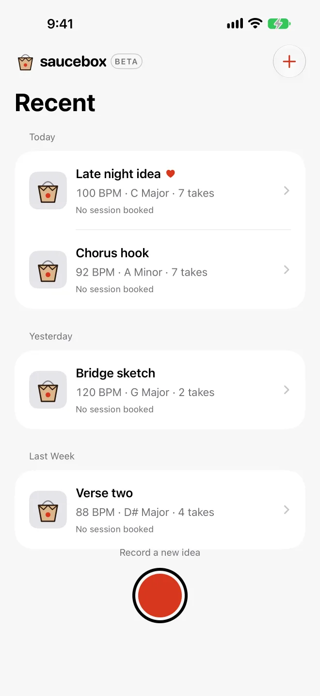

Catch the idea before it’s gone.
Start a take with one tap, keep the best ones and shape them into a song. All on your iPhone.
Three steps
- Install TestFlight from the App Store
- Tap Join on TestFlight
- Open Saucebox and tap the red record button
A look inside
-

Library -

Recording -

Take Bin


Feedback
Tell us where you got stuck, and anything that got in your way.